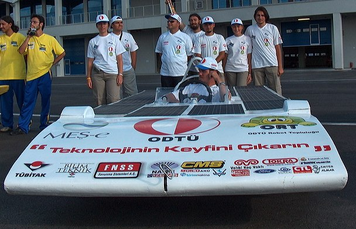
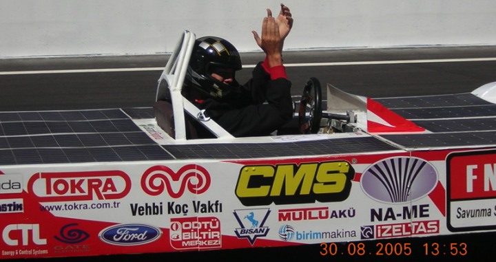
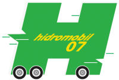
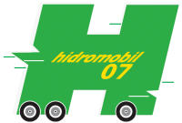
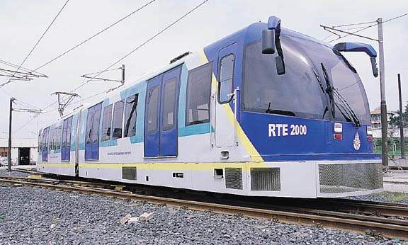
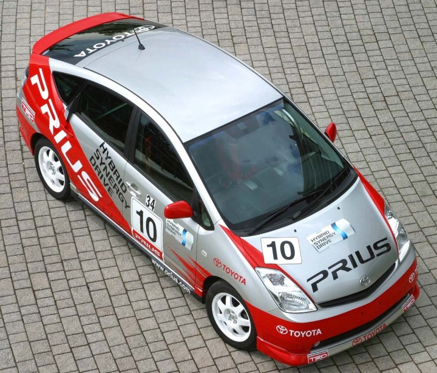

|
01.11.2005
Sayýn üyeler;
Sizlerin de bildiði gibi 30 aðustos 2005 günü Formula1 pistinde TUBÝTAK tarafýndan FormulaG adý altýnda güneþ enerjili araba yarýþý düzenlendi. Bu yarýþa Türkiye'den bir lise takýmý ve çeþitli üniversite takýmlarý olmak üzere 16 takim yarýþa katýldý. ODTU robot topluluðu (ORT) MES-e takimi olarak ta birincilik kupasýný okulumuza kazandýrmanýn sevinci içerisindeyiz.


2005 FormulaG yarýþý Türkiye'de bir ilkti ve yine Türkiye'de bir ilk olan Formula 1 Pisti'nde gerçekleþti. Bu ilki gerçekleþtirmek için 1,5 sene öncesinden ise baþladýk ve büyük bir gayretle ve heyecanla çalýþarak ortaya çok güzel iþler çýkardýk. Bu yarýþa katilmiþ olan bütün takýmlarla birincilik ödülünü paylaþýyoruz. Çünkü hepimiz önce bu isin üstesinden gelebileceðimize inandýk, daha sonra bizlere destek olmasýný istediðimiz herkes bize inandý, içimizdeki heyecan ve hevesle yoðun çalýþmalar sonucunda yarýþ günü pistte araçlarý görmek ve hepsinin güzel performanslara sahip olmasý erseyin ödülüydü.
Ancak bu çalýþma ve hazýrlýk süresi içerisinde bizleri en çok üzen ve hatta bizleri manevi olarak en çok yoran sponsorluk arayýþlarýydý. Evet, bizler güzel iþler çýkaracaðýmýza olan büyük inancýmýzla ve büyük isteðimizle çalýþýyorduk ve çabalýyorduk; kendimize inanýyorduk ancak ortaya bir þeyler çýkartmak için maddi desteðe ihtiyacýmýz vardý. Ancak bizlere, bizim kendimize güvendiðimiz gibi güvenecek, bizlerin arkasýnda duracak, olanak saðlayacak firmalar bulmak çok zorlayýcý ve sancýlý bir süreç oldu.
Ancak bu süreç bizleri kamçýladý ve bizler kendimize þimdi daha da fazla güveniyoruz. Bu sene 2006 güneþ enerjili araba yarýsý TÜBÝTAK tarafýndan tekrar düzenleniyor.
ODTÜ Robot Topluluðu olarak 2006 Güneþ Enerjili Araba yarýsýna takým olarak yeniden katýlýyoruz ve bu sene yapacak olduðumuz araba için ciddi bir bütçe düþünüyoruz ki bu araçla sadece Türkiye'de deðil Dünya çapýnda derecelere adýmýzý yazdýralým ve "biz de varýz" diyelim istiyoruz. Hedefimizi büyük koyuyoruz. Ayný zamanda 2007 hidromobil (hidrojen enerjili otomobil) yarýsý için de baþvurumuzu yaptýk, bir taraftan da önün çalýþmalarýný yürütüyoruz (www.biltek.tubitak.gov.tr/etkinlikler/hidromobil/hidromobil.pdf).
  
Uzun süredir 'yerli otomobil tasarým ve imalatý' konusunda yazýþmalar sürmekte ve hepsini ilgiyle takip etmekteyim. Biz hepimiz birer mühendis adayý olarak kendimize güvenip, araþtýrýp öðrenip, kendi çabalarýmýzla bir þeyler üretmeye, ortaya baþarýlý projeler çýkartmaya gayret ediyoruz. Bu çalýþmalarýmýzda da sizlerin desteðini alabileceðimizi düþünüyorum. Bizlerin baþarýsýna hepinizi ortak etmek istiyoruz.
Aþaðýdaki linkten ekibimiz ve aracýmýz hakkýnda bilgilere ulaþabilirsiniz:
www.robot.metu.edu > ODTU Robot Topluluðu,
www.robot.metu.edu.tr/dosya/sponsorluk.pdf > Bu adresten sponsorluk dosyamýza ulaþabilirsiniz,
www.biltek.tubitak.gov.tr > Bu linkten de yarýþ hakkýnda genel bilgi bulabilirsiniz.
Ýlginiz için teþekkürler
Burcu Güvenatam
ODTU Robot Topluluðu MES-e Güneþ Enerjili Araba Takim üyesi
ODTU Kimya Mühendisliði 2. sýnýf öðrencisi
03.11.2005
Uzun bir suredir bu konuda çok güzel düþünceleri kapsayan yazýlar yazýlmakta. Birçoðunda ayaklar yere basmakta. Bazýlarýnda ise dünya gerçeðinden uzak kalýnmakta düþüncesindeyim
Ben de 15 sene Türkiye'nin en iyi kuruluþlarýndan birinde çalýþtým. Burada hiç de yabana atýlmayacak olan çalýþmalarýn yapýldýðýna þahit oldum ve bu çalýþmalarýn içinde de bulundum.
Burada en önemli konu bence ihtiyaçlar ve bu ihtiyaçlarýn Dünya gerçekleri ile uyuþmasý. Her zaman her yerde herzeyi kendi bünyenizde yapmanýz mümkün olamaz. önemli olan kiþilerin ve/veya guruplarýn konularýnda ihtisas sahibi olmalarý ve bu guruplarýn bir araya gelerek ülke insani ve dünya gerçekleri için ne gerekli ise onun yapýlmasýdýr. Ortaklýk yapmaktan çekinmemek gerektiðine inanmaktayým. Bir atasözümüz var, "Bir elin nesi var, iki elin sesi var." Yurtdýþýndaki insanlar sizlerden bir þeyler öðrenmek için caba gösteriyorlar, sizler de ayni çabalarý onlardan öðrenmek için göstermek durumundasýnýz. Þayet "ben kendi kapalý dünyam içinde bunlarý yapacaðým" derseniz bunu baþarmak inanýn çok zor. ülke hedeflerinin kiþisel hedeflerden ilerde olmasý lazým. Yani genel ülke politikalarýnýn deðiþmeyecek geniþ perspektifleri içerecek þekilde olmasý lazým.
Daha önce de "kendi tasarým programýmýzý yapalým" tartýþmalarý vardý. Burada gözden kaçýrýlmamasý gereken; Biz bunu yaparsak bu pazarý saðlayabilecek miyiz? Bunu dünyaya marka olarak pazarlayabilecek miyiz? Bunun üzerinde düþünmemiz lazým. Bizim tasarým programý yerine bu programý en iyi þekilde kullanacak, dünya pazarýnda yarýþacak olan firmalarýmýz var mi? Onlarý meydana getirmemiz lazým. Dünya'da belli baþlý birkaç tane ana tasarým programý var. Bunlarýn da uluslararasý pazarda kullanýmýnda sorun yok. Ayni Microsoft'un programlarý gibi.
Benim bildiðim sadece proje planlama programý konusunda ABD, Kanada ve birkaç ülkede de programý kullanýlan 1 firma var. Bunlarý çoðaltmamýz lazým. Bunlarý desteklememiz lazým. Bunlarýn ayaklarýna basmamamýz lazým. Her ülke hedefleri çerçevesinde bazý konularý öne çýkartmýþ, bunlarýn da yan sanayileri beraberinde oluþmuþ. Yavuz Kaya Bey'in ifade ettiði noktalara katýlmamak elde deðil. Yurtdýþýnda baktýðýnýzda birçok ülke kendisi için bazý konularý ülke hedefi olarak seçmiþ. Buna baðlý olarak da kendisini geliþtirmiþ.
Örnekler verecek olursa;
Ýsrail Otomobil üretiyor mu? Hayýr, ama öyle konularda otomobil üretimi içerisine dolaylý olarak katkýsý var ki, oraya yapacaðý yatýrýmýn çok daha azýnda yatýrým ile çok daha fazla pazara ve getiriye sahip oluyor.
Kore Otomobil üretiyor mu? Evet, onun içinde öncelikle yabancý ortaklýk yaparak onlardan teknoloji konusunda öðrenmesi gerekenleri öðrenmiþ. Daha sonrasýnda da Globallesen dünyada ülkesinin saðladýðý desteklerle de kendi markasýný oluþturmuþ. Dünya devleri arasýnda yer alýyor.
Çin Otomobil üretiyor mu? Evet, burada su soru akla geliyor. Adamlar hem kendi markalarýný üretmekteler, hem de Dünya markalarý ile ortak tesisleri var. Burada devlet bu kuruluþlara yaptýklarý ortaklýklarda devlet hissesi ve destekler konusunda neler yapýyor, ona bakmak lazým. Adamlarýn pazarý çok büyük, bizim ülkemizin 20 kati nüfuslarý var. Azýmsanmayacak kadar da çok sayýda Dünya devi kuruluþ yatýrým yapmýþ, devlet de onlara "yabancý sermaye" diye bakmadan bu yatýrýmlarý için gereken desteði vermiþ.
Ýspanya Otomobil üretiyor mu? Evet üretiyor. Adamlar kendi markalarýný Dünya devi ile birleþtirmiþler, bunu da o vasýta ile pazarlýyorlar. Bunun yanýnda da o fabrikalarýn ihtiyacý olan kalýplarý, fikstürleri, komple montaj, kaynak vb. gibi hatlarý üretmekteler. Bizlerin yaptýðýmýz iþlerin misli ile getiri saðlayacak olan iþleri kendi bünyelerinde üretip, Dünya pazarýna da satmaktalar.
Yurtdýþý pazarý için ülkemiz çok uygun bir pazar. Ama, hangi noktalarda? Ona bakýlmasý lazým. Cevre için problem olan dokum sanayi, aðýr talaþlý imalat sanayi vb. Oralarda da en pahalý ve getirisi yüksek olan mühendislik hizmetleri, bu hizmetlerde kullanýlan komponentler. Bizlerin bunlarý yapabilecek is gücüne sahip olduðumuzu unutmamamýz lazým. Bu is gücünün deðerlendirilip, desteklenmesi, devletinde sadece yön gösterici ve istihdama yönelik çalýþmalarýn içerisinde gereken hizmetleri saðlamasý lazým...
Oldukça uzun bir yazý ile sizleri bunaltmýþ olabilirim, beni mazur görmenizi rica edeceðim.
Saygýlarýmla
Armaðan Ekrem Göyünç
FARGE Fikstür Makina Sanayi ve Ticaret A.Þ.
04.11.2005
Deðerli üyeler,
"Yerli otomobil tasarýmý ve imalatý" baþlýklý mesajlarýn bir kýsmýný okudum; Çok sýra dýþý ve hoþ bir fikir. Gerçekleþmesi çok zor ama baþarýlabilirse Dünya'ya mal olacak bir hareket nazarýyla bakýyorum.
Kimi arkadaþlarýn "çok zor, çünkü, çok fazla para ve emek gerekiyor" dediðini okudum, kimi arkadaþlarýn da "niye olmasýn?" dediðini. Arkadaþlar, bence olmayacak bir þey yok. Ortaya bir ürün çýkarsa ki bu CAD/CAM tasarýmý anlamýnda bir ürün, bu üründe ýþýk gören firmalar destek olacaktýr böyle bir harekete. Yalnýz benim merak ettiðim ve aþýlmasýný güç gördüðüm konu þu, aracýn aerodinamik hesaplarý, yakýt tüketimi, güvenlik gibi daha bir çok konuda gerekli olan hesaplamalarýn ve testlerin nasýl yapýlacaðý?..
Bu konuyla ilgili ÝSTANBUL ULAÞIM A.Þ.'nin ürettiði metro vagonlarýnýn çok ilginç bir hikayesi var ki bu "Yerli Otomobil" fikriyle týpa týp ayný:
Ulaþým A.Þ.'nin çalýþanlarýndan biri raflarýndaki fazla ve kullanýlmayan yedek parçalarý görünce, "bu kadar parçayý ne yapalým? Kendi vagonumuzu yapsak mý acaba?" diye bir nükte yapýnca bir fikir doðmuþ ve baþlamýþlar tasarýma. Bildiðim kadarýyla ODTÜ, ÝTÜ, TUBÝTAK gibi kurumlarýn bilimsel gücünü ve kendi pratik deneyimlerini kullanarak bir lokomotif üretmiþler. 600.000 km test edilmiþ ve sonunda geçer not almýþ. Sonuçta da vagon baþýna 500.000-750.000 dolar gibi bir kar etmiþler yerli üretimle. Antalya, Ankara, Ýzmir, Konya, Kayseri, Bursa gibi bir çok þehrin metro çalýþmalarý sonucu gerekli olan vagonlarýn Türkiye'de üretilmesi ile 1,5-2 milyar dolar kar bekleniyormuþ...

Buradaki fikir de bunun gibi doðup gerçekleþebilir...
Ama benim bütün bunlarýn dýþýnda çok daha farklý bir görüþüm var. Bildiðiniz gibi yakýtlý araçlarýn çevreye verdiði zararlar insanlarý ekonomik ve zararsýz tekniklere itiyor. Bence mevcut gücün çevreye daha az zararlý araçlarý tasarlamaya yönlendirilmesi daha verimli olur. Mesela Toyota firmasý melez (hibrit) bir araç üretti (Prius) ve 3.000 adet üretmeði düþünürken 18.000 adet sipariþ aldý (turnayý gözünden vurdu).
Diyeceðim þu; bu fikir eðer gerçekleþebilirse geleceði olan ya da daha uzun ömürlü olan bir teknik üzerinde gerçekleþebilirse (mesela hidrojen arabasý gibi) çok daha büyük kazanýmlar elde edilebilinir.
Herkese selamlar sunar, iyi çalýþmalar dilerim.
Saygýlarýmla
Bilgehan Mehmet Tireli

Toyota Prius (Hybrid Synergy Drive) www.toyota.com/prius
............
Ýlgili Haberler:
02-05-2005 > Ýlk yerli tramvay olan RTE 2000'i tasarlayarak yüzde 60 yerli malzemeyle imal eden Ýstanbul Ulaþým A.Þ., 2006 yýlýnda Alman ortaklarla seri imalatý hedefliyor:
www.turkcadcam.net/haber/2005-05-02.html
23-02-2003 > Ýstanbul Ulaþým A.Þ. tarafýndan üretilen ilk yerli tramvay RTE 2000'in tasarýmýnda CAD/CAM/CAE sistemleri kullanýldý. Firma, düþük platformlu bir cadde tramvayý da üretecek:
www.turkcadcam.net/haber/2003-02-23.html
04.11.2005
Bilgehan Bey,
Bu fikriniz çok akýllýca, zira birçok arkadaþýn da ifade etmeye çalýþtýðý, sadece aracý dýþýndan görünüþ olarak tasarlamak.
Halbuki araç öyle dýþýndan tasarlamakla kalmýyor. Bunun için motorundan, aktarma organlarýna, fren sisteminden, güvenlik kriterlerine, aydýnlatma sitemlerinden, elektrik tesisatýna, koltuklarýna varýncaya kadar o kadar çok özen gösterilmesi gereken, bu arada da ihtisas isteyen konu var ki, bu da ancak bu konunun uzmanlarýnýn yababileceði bir iþtir. Bu uzmanlarýn çoðu ilgili olduklarý ana sanayi ve yan sanayileri içerisinde bu iþlevleri yapmaktalar. O konularýn ayrý ayrý gruplar halinde ele alýnýp çözülmesi lazým...
Halbuki araç öyle dýþýndan tasarlamakla kalmýyor. Bunun için motorundan, aktarma organlarýna, fren sisteminden, güvenlik kriterlerine, aydýnlatma sitemlerinden, elektrik tesisatýna, koltuklarýna varýncaya kadar o kadar çok özen gösterilmesi gereken, bu arada da ihtisas isteyen konu var ki, bu da ancak bu konunun uzmanlarýnýn yapabileceði bir iþtir. Bu uzmanlarýn çoðu ilgili olduklarý ana sanayi ve yan sanayileri içerisinde bu iþlevleri yapmaktalar. O konularýn ayrý ayrý gruplar halinde ele alýnýp çözülmesi lazým...
Geçenlerde bir arkadaþýmýz ifade ettiler, bir motor geliþtirmesi 2 yýl sürmüþ. Bizler de içerisinde yer aldýðýmýz projelerden hatýrlamaktayýz, bu tarz projeler 5-6 yýllýk çalýþmalarýn sonuçlarýnda gerçekleþir. Burada iyi bir organizasyon ve bilgi birikimine sahip olan kiþilerle, bunlara destek verecek, gönüllü, geliþme, geliþtirme arzusu olan kiþilerin bir arada olmasý gerekir.
Bunun yaný sýra geçenlerde ODTÜ'den bir öðrenci arkadaþýmýzýn da ifade ettiði, sizin de belirttiðiniz gibi hibrit araç projeleri üzerinde çalýþmak çok daha uygun olur...
Diðer türlü çalýþma için çok büyük mali kaynaklarýn oluþmasý ve sabýrla da bu projede olasý aksamalar ile karþýlaþýldýðýnda dayanma gücü gereklidir.
Saygýlarýmla
Armaðan Ekrem Göyünç
FARGE Fikstür Makina Sanayi ve Ticaret A.Þ.
08-11-2005
Deðerli üyeler,
Yerli otomobil Türkiye'de her zaman bir tartýþma konusu olmuþtur. Bu konuda geçmiþte bazý çalýþmalar olduðunu yakýn tarihimize baktýðýmýzda görmekteyiz. Fakat 80 yýllýk tarihinin büyük bir kýsmýný ekonomik vs. krizlerle yaþayan bir millet herhalde müteþebbis olma konusunda pek cesur davranamaz kanaatindeyim?..
Son yýllarda yaþanan siyasi ve ekonomik istikrar daha uzun sürer mi? Bilemiyorum ama ben kendi çapýmda bazý iþleri yapmaya çalýþýyorum; Somut bir ürün ortaya çýktýðýnda ki pek yakýnda bu olacak, sizlere bu konuda bilgi vermekten mutluluk duyacaðým...
Saygýlarýmla
Fatih Bahþi
Makine Müh.
Verisim Ltd.
09.11.2005
Sayýn Üyeler,
Türk imalatý otomobil demek her þeyi ile Türk imalatý olmalý anlamýna gelmemeli... Bunu yapmamýza gerek de yok, ki þu an Mercedes, BMW, VW, GM gibi büyük firmalarýn bile bazý yedek parçalarýný nerelerde ürettiklerini bilseniz; Gövde kalýp dökümlerinden, kalýplarda kullandýklarý çelik malzemelere, punta kaynaklarýndaki elektrotlardan, ýsýl iþlem ýzgaralarýna.... Adý duyulmamýþ Türk atölyelerinde bile bu firmalara dolaylý/dolaysýz yedek parça üretenler var... Parçalar veya dizaynlar yurt içinde planlanýr, planlanmaz, üretilir, üretilmez bu problem deðil... Bence en önemli olan Marka oluþturmaktýr. Bu, diðer tüm sektörler için de geçerlidir.
Bir de þu kesinlikle yýkýlmalý: "Türk Malý" önyargýsý... Kendi vatandaþlarýmýzdan çoðu "Türk malý" diye almaz, yabancý olsa alýr...
Ýmalat daha kolaydýr, önemli olan onu satabilmektir...
Saygýlarýmla
D. Özhan Türer
Mak. Müh.
Saðlam Metal A.Þ.
Ýstanbul
10.11.2005
Deðerli üyeler,
Yerli Otomobil Tasarýmý ile ilgili görüþleri uzun zamandýr ilgi ile izliyorum. Olumlu veya olumsuz fikirlerini açýklayan tüm arkadaþlara teþekkürlerimi sunuyorum.
Uzun zamandýr benim de düþündüðüm konunun Salih Emin arkadaþýmýz tarafýndan gündeme getirilmesini, buna paralel olarak ayný veya deðiþik konularda kafa patlatan, üretim çabasý olan herkesi kutluyorum.
Burada deðinmek istemediðim, çeþitli nedenlerle ülkemiz, bu ve diðer konularda çok zaman kaybetti. Ancak geçen zaman içinde de müthiþ bir, bilgi beceri ve tecrübe birikimi oldu.
Doðru ve akýllý konseptler üzerinde güçlerimizi birleþtirirsek zamaný lehimize çevirebileceðimiz ve baþaracaðýmýz kanýsýndayým.
Bu konularda zaman zaman açýklanan, benim de katýldýðým veya katýlmadýðým fikirler oldu. Kafamdaki konsepti kýsaca þu sekide özetlemek istiyorum.
1- Tasarlanacak otomobilde, kesinlikle yeni veya geleceðe yönelik enerjiler kullanýlmalý. Elektrik motorlu, hidrojen yakýt pilli, güneþ enerjili veya bilmediðimiz vs. gibi.
2- Tasarým (Endüstriyel Taþ.) çaðdaþ, geleceðe yönelik ultra modern çizgilere sahip olmalý.
Uzun yýllar otomotiv sektöründe bulunmam nedeniyle, düþündüðüm konsept kapsamýnda, söz konusu aracýn exterior/interior tasarýmýna (skeç/ yüzey model/ model) katký vermek isterim.
Baþarý dileklerimle...
Muhsin Partanaz
Endüstri Tasarýmcýsý
15.11.2005
Merhabalar,
Gruptaki arkadaþlarýn heyecanýný anlamakla birlikte bazý gerçeklerden de bahsetmeden geçemeyeceðim. Þöyle ki:
1. FRP (Fiber Reinforced Polymer) gövdeli araç ile sac gövdeli araç arasýnda çok büyük farklar vardýr;
a. Birinin gövde imalatýnda birkaç kalýp kullanýrken diðerinde yüzlerce kalýp kullanýrsýnýz.
b. Sac kalýpçýlýðýyla FRP kalýpçýlýðý da birbirinden çok ayrý mefhumlardýr. Biri küçük bir atölyede gerçekleþtirilebilecekken diðeri devasa pres tezgahlarýna ihtiyaç duyar. Ayrýca kalýp hazýrlama aþamalarý da farlýdýr. Sac kalýpta fazladan çekme/derin çekme simülasyonlarý vs. yaparsýnýz.
c. Birinin montajýnda yapýþtýrma ve baðlama elemanlarý kullanýrken diðerinde kaynak, yapýþtýrma ve baðlama elemanlarý kullanýrsýnýz.
d. Ýki gövdenin montaj karmaþýklýðý/güçlüðü de farklýdýr.
e. Birinin boyama prosesleriyle diðerinin boyama prosesleri de çok farklýdýr.
Bu liste daha epey uzar gider... Özet olarak bilgi vermek istedim.
2. Sanýrým bu konunun ana temasý öncelikle "Yerli tasarým" idi. Verilen örnek bunun dýþýnda kalmaktadýr. (Tasarým bir Alman mühendise ait)
3. Ýdealist olmak, istekli olmak böyle bir proje için gerekli koþullardýr ancak yeterli koþullar olmaktan uzaktýr. Þunu altýný çizerek belirtmek isterim: Bu iþ baþarýlmaz deðil, ancak "TAM ZAMANLI BU ÝÞE ADANMIÞ PERSONEL" ile mümkündür. Araç tasarým iþine baþlamadan önce bu iþin ne kadar zor ve imkansýz bir þey olduðunu düþünürdüm. Ancak edindiðim TECRÜBEYLE bunun ne kadar kolay ve mümkün olduðunu gördüm... Kolay, çünkü yapýlmasý gerekenleri biliyorum. Nasýl yapýlmasý gerektiðini biliyorum...
Zor çünkü,
* Tam zamanlý
* Tecrübeli eleman lazým
* Tecrübeli elemanýnýz yoksa bunlara tecrübe aktaracak deneyimli eleman lazým
* Para lazým...
Saygýlarýmla,
Sami Özbay
Ford Otosan
|